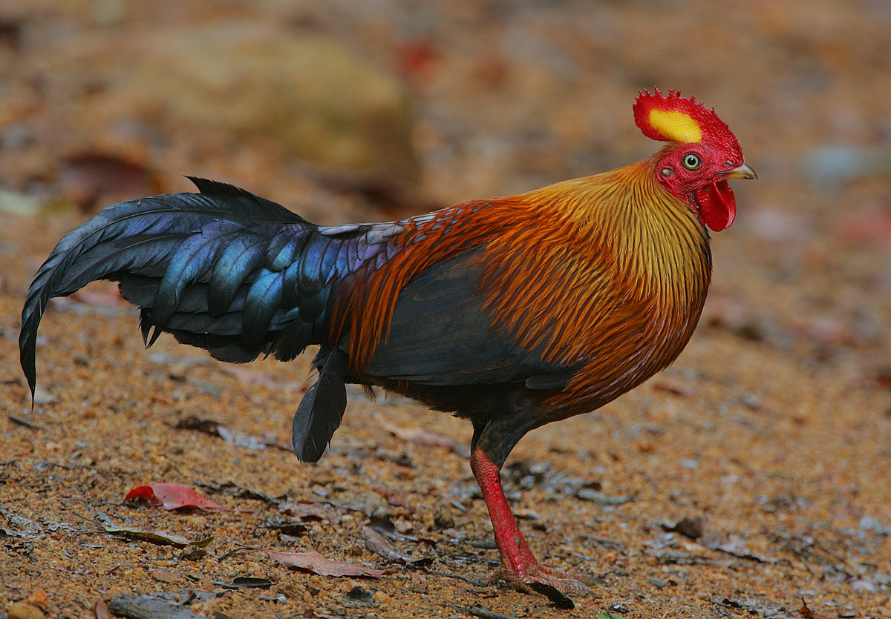

Yala National Park


Yala national park is situated in the southern area of sri lanka and it resides over 2 districts.The best time to visit the park is during dawm. The climate is very hot and dry because the park resides in the arid zone. The are rugged rocks and dried trees and shrubs in the park. Some lagoons also can be found here and there where animals deers and other animals come to quench their thirst. The Park has a wide variety of wildlife. You can see monkeys hanging from one branch to another and elephants crossing tracks which might frighten anyone for a second. Uptil now 32 spiecies have been recorded such as water buffalo,Sri lankan leopard,spotted deer,sambar,golden jackal etc. There is alot of bird life as well in yala and so far 130 species has been reported and some of them endemic only to sri lanka.Some birds are purple heron,pelican,night heron,rare blacked neck store.If your a tourist to sri lanka this safari is one you must definitely experience.
Wasgamuva Elephant Watching

Witness the amazing forest setting and the landscape of this park. Rest assuring you the sights of mighty Elephants in a Wasgamuwa safari ride, the park is also a home for a wide variety of mammals including the Leopard, Sloth Bear, Purple-faced Langur Monkey, Wild Boar, Sambar Deer, Spotted Deer, Water Buffalo.The small pond like structures are a home for iguanas,crocodiles and birds. The blend between the animals and the environment is very beautiful and gives a perfect opportunity for some to snap a pic of it. For People who are visiting Anuradhapura and polonnawruwa a visit to Wasgamuwa is a must.
Wilpattu


Wilpattu National Park has a very natural habitat compared to the rest.; coastal belt, natural lakes (villus), rocky cliffs, scrublands, open grasslands and dense forest are a home for many animals.. Among the species are 31 mammals.
The biggest draws in Wilpattu are Leopards and Sloth bears.
Apart from those two mammals are Asian Elephants (Elephas maximus), Spotted Deer, Barking Deer, jackals, sambhur, mouse deer, Wild Pig, Water Buffalo (Bubalus bubalis) and Mugger Crocodiles.Numerous beautiful butterflies such as Great Eggfly, Blue Mormon, Common Mormon etc also can be seen.
This park is also a home to many birds.
Also roaming on the grasslands are Star tortoises (Geochelone elegans) at Wilpattu. In the large Villus are Pond turtle (Melanonchelys trijuga) and the Soft shelled turtle (Lissemys punctata)
| Name of the Animal | Image of the Animal | Location | Physical Characteristics |
|---|---|---|---|
| Sri Lankan Elephant (Elephas maximus maximus) |
Wasgamuva and Yala national Parks | The Sri Lankan elephant is much more smaller than the african elephant.The back of their body has a convex shape. The male elephant is generally larger than the female. Some males have tusks. | |
| Jungle Fowl (Gallus lafayettii) |
 | Wilpattu National park | This jungle fowl endemic to sri lanka is slightly bigger than the rooster.it has brownish body mixed with a dark red texture.The feathers are generally indigo in color. |
| Yala Leopard (Panthera pardus kotiya) |
Yala national park | This leopard has a dull yellow coat with blackspots and tends to be a little bit more larger than the inidan leopard.Life span is about upto 12-15 years. | |